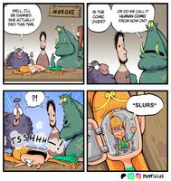
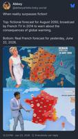
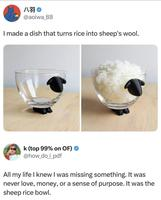
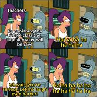

0








0


fjo3 shares a report from the AFP: The latest heatwave sweeping across Europe is a stark reminder that it is the world's fastest-warming continent, stretching into an Arctic that is heating at an even greater pace. Britain, France, Italy and Spain have issued red alerts and health warnings for much of their territory this week as the region endures its second heat episode since May.
Here is a look at why Europe is warming faster than elsewhere: The planet as a whole is around 1.4C warmer than in preindustrial times, defined as 1850-1900. By comparison, Europe is around 2.4C hotter than the preindustrial era, according to the EU's Copernicus Climate Change Service. The long-term rise in global average temperatures is mainly due to greenhouse gas emissions from burning oil, gas and coal, but it varies by regions due to a combination of factors. Land warms faster than the ocean as water can absorb more heat and cool through evaporation.
Shifts in atmospheric circulation have driven more frequent and more intense heatwaves in the European summer, according to Copernicus. High-pressure systems, which bring settled weather and higher temperatures, have become more common in Europe, Copernicus director Carlo Buontempo said. [...] Another major reason is geography as Europe is connected to the Arctic, which is 3.2C warmer than in preindustrial times. The region's rising temperatures are partly due to a process known as the albedo feedback. Bright snow and ice reflect much of the sun's heat back into space, but as they melt they reveal darker, heat-absorbing surfaces such as land and the ocean.
In other parts of Europe, areas where snow was very frequent in winter have seen this coverage shrink, exposing dark land. Stricter air quality regulations have reduced aerosol emissions since the 1980s. But tackling the pollutant had the side effect of contributing to global warming, as these tiny airborne particles have a cooling effect by reflecting sunlight and making clouds more reflective.
Read more of this story at Slashdot.
Wikipedia cofounder Larry Sanger has been indefinitely banned from editing the site after editors concluded that he violated its canvassing rules, "or in other words, calling on his followers off platform in order to influence Wikipedia's content," reports 404 Media. Sanger says the ban proves Wikipedia suppresses ideological diversity, while editors argue he was trying to mobilize an outside audience to influence internal decisions and had ignored an earlier warning. From the report: The discussion that led to the decision to ban Sanger concluded with what an editor called a "clear consensus" to ban Sanger. "There is general agreement among participants that he has engaged in off-wiki canvassing and is not here to constructively build the encyclopedia," the editor said in a note closing the discussion. "There is also a significant concern shared by many editors that his actions constitute calls for outing."
While Sanger has been railing about bias on Wikipedia for years, the specific issue here is around his WikiProject Intellectual Diversity. WikiProjects are group efforts among Wikipedia volunteers to deal with certain issues on the site. [...] Sanger's WikiProject Intellectual Diversity, as its name implies, aims to bring more intellectual diversity to the site, mostly meaning more right-leaning perspectives. Sanger's WikiProject Intellectual Diversity and its goals alone do not merit a ban according to Wikipedia's policies. The problem, according to Wikipedia editors, is that during the discussion about whether to allow WikiProject Intellectual Diversity to become an official WikiProject, Sanger invited his 91,000 followers on X to influence that discussion.
Discussions about potential bans are supposed to remain open for at least 72 hours. While consensus that Sanger had violated Wikipedia policies was clear, Sanger was banned at some point before that deadline. He was then briefly unbanned, and then again indefinitely banned once 72 hours had elapsed and the discussion about the ban closed. "Wikipedia has become more of a mob-rule anarchy than ever," Sanger said in a statement sent to me by a spokesperson. "In the kangaroo court in which a mob ousted me, Wikipedia's administrators showed that they don't appear to value details like formal charges, a designated prosecutor, basic decorum, distinction between prosecution and judge, dispassionate adjudication, and so forth. They have no proper system other than triggering a mob to selectively enforce their hodgepodge of vague rules."
"Now that same mob has blocked me for trying to bring an intellectually diverse group of thinkers and editors to the site," Sanger continued. "Subscribing to their groupthink is now an official requirement of being a member in good standing. Something must change, and now. I only wonder if the system as it currently stands can even allow the discourse necessary to fix the system."
Read more of this story at Slashdot.
Walmart is acquiring self-serve connected-TV ad platform Vibe.co for a reported $1.4 billion, adding it to an advertising ecosystem that already includes smart-TV maker Vizio. AdExchanger reports: On Tuesday, Walmart announced that it is buying Vibe.co, the French self-serve ad platform that specializes in helping small brands buy streaming commercials with similar ease and precision as they get from search and social. Vibe has been vying for a bigger share of the ad dollars moving to connected TV, especially in the US, as evidenced by the company's ubiquitous billboards in major cities including New York and San Francisco. Now, Vibe joins Walmart Connect's commerce ecosystem alongside the smart TV maker Vizio. And Vibe's tech is poised to help unify Walmart's growing CTV footprint with the closed-loop attribution provided by its retail sales data.
[...] Together, Walmart and Vibe.co strive to "build the best ecosystem for the performance TV market," Vibe CEO and Co-Founder Arthur Querou told AdExchanger. Performance CTV has a high ceiling for growth. The performance budgets dedicated for streaming platforms are still small potatoes compared to search and social, Querou said. Only one-quarter of CTV ad campaigns have lower-funnel objectives, and that number has been static for years, according to data from Advertiser Perceptions. Now that Walmart owns both Vibe and Vizio, advertisers should have an easier time tying streaming campaigns to shopper data. That promise stands to win Walmart more marketing dollars earmarked for retail media and streaming behemoths -- including Amazon.
Walmart is especially interested in attracting more small- and medium-sized businesses (SMBs) who lack the tools, budgets or teams to invest in streaming TV, a Walmart spokesperson told AdExchanger. Other ad platforms, including MNTN and Magnite, have likewise targeted SMB advertisers as a source for continued growth in the CTV market. By adding Vibe.co, Walmart can court SMBs with the pitch that its new self-serve tools will make it easier for them to execute CTV campaigns. Plus, SMBs tend to prioritize performance campaigns, since they are under more pressure to justify tighter ad budgets and thus have to be more selective about which platforms they advertise on. And Walmart is better positioned than most platforms to prove its ads drove performance thanks to its retail data foundation.
Read more of this story at Slashdot.
Meta has launched its first smart glasses without Ray-Ban branding. Starting at $299, they're cheaper than the Ray-Ban Meta Gen 2 while retaining EssilorLuxottica as a design and manufacturing partner. The Verge reports: As far as style and specs, the Meta Glasses aren't that different from Ray-Bans. The internal specs are the same as the recently released Ray-Ban Meta Optics Styles, with slightly longer battery life. The Adventurer models have thinner rims, while the Fury models hew a bit closer to the Meta Ray-Ban Display with a bolder, chunkier frame. You could describe the Adventurer as square, and the Fury as even more square. The Kylie glasses sport a more unique design with a distinct Y2K flavor that I'm told is meant to be worn lower on your nose. [...] While playing around with the Meta Glasses, it was hard not to notice that the camera appears smaller than in previous Ray-Ban glasses. Technically, Himel tells me, that's not new to these Meta Glasses. It was actually introduced back in March with the prescription-optimized Optics Styles.
[...] Meta is quadrupling down on AI. The new Meta Glasses will all launch with Muse Spark, the first model out of Meta's Superintelligence Labs. (It'll also be arriving on older Ray-Ban and Oakley glasses in the US and Canada via a software update.) Supposedly, that means more helpful glasses. At my hands-on, I was told that Meta AI would now be less stiff. I'd be able to talk to it more naturally and get smarter responses. The AI now supports 14 more languages, including Arabic, Japanese, Mandarin, Hindi, and Korean. Pedestrian turn-by-turn navigation is also coming to Meta's displayless glasses. Later this month, there'll be a new "dynamic photo" feature that automatically takes multiple frames and then recommends the best one.
Read more of this story at Slashdot.
A peer-reviewed Nature critique argues that Microsoft's 2025 Majorana quantum-computing breakthrough -- and its claim that it could enable "a truly meaningful quantum computer not in decades, as some have predicted, but in years" -- is fundamentally flawed. According to Dr Henry Legg, a lecturer at the University of St Andrews, the claims were undermined by omitted data, selective plotting, and basic Python errors that concealed alternative results. Microsoft, for its part, says the bugs were minor and stands by its findings and roadmap. The Register reports: "Last year they claimed to be years, not decades from a 'topological quantum supercomputer,'" Legg told The Register in an email. "My feeling is that they are centuries, not decades away. If it works at all -- and, based on what I have seen, the most likely scenario is that it doesn't work." Based on his analysis of the research Microsoft published in 2025, Legg argues that the company's claims about finding and being able to control the elusive Majorana particle to build a topological superconductor do not withstand scrutiny.
"I demonstrate that Microsoft's tune-up software is flawed and that coding errors resulted in incorrect statements to peer reviewers," said Legg. "Raw data, which was omitted from the original paper, also appears to indicate Microsoft's devices contain considerable disorder and are not compatible with the existence of a topological gap. In other words, the prerequisites for Microsoft's claims do not appear to be met, but this was obscured because this data did not appear in the original publication."
Essentially, Microsoft has proposed a Topological Gap Protocol (TGP) that can be used to detect the phase transition deemed to be a prerequisite for conducting quantum calculations using Majorana particles. Legg argues that based on his analysis of underlying transport data (measurements of particle change) -- omitted from the original publication -- Microsoft chose to focus on results that supported its thesis and ignored data that could be interpreted as a negative result. As he notes in his critique: "The TGP plotting code was set to highlight only the largest purportedly topological region."
"The primary consequence was the omission of other regions that passed their tune-up protocol (the TGP)," said Legg. "When peer reviewers asked if other regions existed, Microsoft inaccurately stated that they had investigated the only region passing the protocol within the explored range. This was not correct." Legg also argues that Microsoft mishandled its code. "The code antisymmetrized bias voltage based on array index rather than physical value," his analysis says.
In other words, Microsoft's researchers made a basic programming mistake by evaluating the array index -- the number identifying a value's position in an array -- instead of the value to which the index refers. "There were two pretty basic Python programming errors that hid these alternative regions," Legg explained. "Their plotting software was hardcoded with a filter (zbp_cluster_numbers=[1]) that forced it to display only the single largest region, concealing other successful results from their phase maps. Changing this to zbp_cluster_numbers=[1,2] shows already a second region." Legg added: "The TGP software transformed the data by simply reversing a Python array (x[::-1]) based on its index position, ignoring the actual physical bias voltages."
Read more of this story at Slashdot.
An anonymous reader quotes a report from the Associated Press: The Trump administration is providing $17.5 billion to speed the development of 10 new large nuclear reactors to meet the skyrocketing power demand from massive data centers. Energy Secretary Chris Wright cited "tremendous interest" among developers of data centers that would buy the power, as well as utilities and energy companies. The nuclear plants could begin construction by 2030 and become operational in the mid-2030s, Wright and other officials said Tuesday. "This is the start," Wright said on a call with reporters. "We're going to move with the players that are ready to stand up and move quickly. Once that supply chain is up and running, do we think there will be dozens of these built going forward? I'd be very surprised if there were not."
Most U.S. nuclear power plants were built between 1970 and 1990. Only two new large reactors have been built from scratch in the United States in recent decades. Those two reactors, at Georgia Power Co.'s Plant Vogtle, were completed years late and billions of dollars over budget. The 10 new reactors will use the same design, Westinghouse's AP1000. Wright said the Plant Vogtle project struggled because of bad planning, supply chain problems and the COVID-19 pandemic. But, he said, the reactor design is "robust and sound."
Read more of this story at Slashdot.
Ancient Slashdot reader Mark Round writes: Longtime reader here (since mid-1999 -- Hot Grits! Oog the Caveman! Beowulf clusters!), and I can still remember posting back on Slashdot's own 5th anniversary. Time's rolled on: my own blog just turned 25, and it's now roughly 40 years since I first sat down at a computer. So I went digging through archive.org, old backups, and a box of ZIP disks, and wrote up a long look back at four decades of computing through the one website that's been my online home along the way. It runs from my first 8-bit micro and a 1,200-baud modem through discovering the actual Internet at university (and burning far too many hours on Slashdot and sister sites like freshmeat.net), past gloriously pimped-out Enlightenment Linux desktops, all the way to the modern cloud-native world. Plenty of dodgy screenshots, terrible code, and fond memories of long-gone haunts like kuro5hin.org and Linux Coffee Talk along the way.
Read more of this story at Slashdot.
alternative_right shares a report from ScienceAlert: If you consumed a wild mushroom and suddenly started seeing tiny people around you, you might reasonably assume it contained a familiar psychedelic. But that does not appear to be the case with Lanmaoa asiatica, known locally as jian shou qing, a mushroom species sold in markets in Yunnan, southwestern China. When eaten undercooked, the mushroom can produce vivid visions of miniature people -- not unlike Gulliver on his travels to Lilliput. To try and find out the root cause, University of Utah mycologists Colin Domnauer and Bryn Dentinger sequenced the genomes of 53 mushroom samples from across the wider Lanmaoa genus. And despite the reported hallucinations, they found no close matches to genes associated with psilocybin or ibotenic acid, two well-known mushroom hallucinogens whose biosynthetic pathways were specifically examined in the study.
"Biosynthetic gene mining of the L. asiatica genome found no close hits with any genes known in the production of mushroom psychoactive compounds," write the researchers in their published paper. "This supports our hypothesis of the presence of a novel unidentified metabolite responsible for the unique hallucinogenic properties of L. asiatica." [...] Whatever chemical pathways are causing these effects in the brain, the responsible compound appears to be something scientists have not yet identified. [...] By identifying 1,515 corresponding genes across the selected specimens, the researchers obtained a clearer answer to the question of what defines a mushroom species as part of the genus Lanmaoa. There are now 17 recognized species in the genus, including four that haven't been identified before, two of which the researchers specifically named here: Lanmaoa fallax and Lanmaoa carbonilivor. The researchers say the Lanmaoa family and evolutionary tree can now be more fully mapped out, and some existing specimens may need to be reclassified.
Read more of this story at Slashdot.
An anonymous reader quotes a report from The Guardian: A tech sell-off shook global markets on Tuesday as attention turned away from developments in the US war with Iran and toward the future of AI companies and chipmakers that have driven stock markets to record highs. The tech-heavy Nasdaq index closed 2.2% lower on Tuesday. The S&P 500 was also down by Tuesday afternoon, dropping 1.43% while the Dow remained steady. All three major US indices have hit record highs this year, riding off a rush of funding to support AI technology and infrastructure. Nasdaq is up 10% for the year, while the Dow jumped 6% so far this year, breaching past 51,000 points, and the S&P 500 is up 7.3%.
But some economists have warned that the influx of AI spending is a bubble reminiscent of the dot-com bubble that burst in the early 2000s. Seven tech companies make up 30% of the S&P 500's value. The heavy reliance on a single industry and a few key companies has some investors wondering if it's a matter of when, not if, there will be a burst. Those concerns have been heightened by signals from the Federal Reserve last week that it may increase interest rates, and therefore the cost of borrowing, in order to tackle rising inflation. Alphabet fell 5% on Monday. SpaceX plunged 16%. The selloff also spread to Asia, with South Korea's benchmark dropping 10% as SK Hynix and Samsung Electronics each lost more than 12%, while Japan's Nikkei 225 declined 3.5%.
Read more of this story at Slashdot.
A 29-year-old bug in the Squid web proxy, dubbed Squidbleed and tracked as CVE-2026-47729, can let an authorized proxy user retrieve fragments of another user's cleartext HTTP requests, including credentials and session tokens. The security researcher who reported the flaw credited Anthropic's Claude Mythos Preview for the discovery. The Hacker News reports: Squid describes this as an attack by a trusted client: someone already permitted to use the proxy, not any random host on the internet. That matches Squid's usual home, shared networks like schools, offices, and public Wi-Fi. In those setups, the attacker is just another user of the same proxy. The leak also only reaches traffic that Squid can read. Normal HTTPS rides an opaque CONNECT tunnel, so Squid never sees inside it; the exposed traffic is cleartext HTTP, plus TLS-terminating setups where Squid decrypts and inspects. The attacker also needs the proxy to reach an FTP server they control on port 21. Both FTP and that port are on by default.
[...] If you patch, verify the fix, not just the version. Confirm the guard is in FtpGateway.cc, or check your distribution's backport, since distros ship their own builds (Debian packages Squid 5.7). The public thread is still inconsistent: maintainer Amos Jeffries first said Squid 7.6 carried the fix, then corrected that to 7.7, and on June 22 Debian's Salvatore Bonaccorso noted the referenced commit looks like it is already in 7.6. The fix is small, a null-terminator check before the vulnerable strchr calls, merged to the development branch in April and v7 in May. Squid 7.6 does separately patch CVE-2026-50012, an unrelated cache_digest heap overflow.
The cleaner move is the one the researchers recommend anyway: turn FTP off. Chromium dropped FTP years ago, and most networks carry almost none of it, so disabling it removes this attack surface for free, whatever build you run. The risk is real but bounded. SUSE rates it moderate, CVSS 6.5, and the vector explains the score: the attacker needs proxy access (low privileges), and the only impact is confidentiality, nothing on integrity or availability.
Read more of this story at Slashdot.
Longtime Slashdot reader hackingbear shares a report from TOP500: The 67th edition of the TOP500 list of the world's most powerful supercomputers was announced today at the ISC 2026 conference in Hamburg, Germany. LineShine, a previously unlisted system installed in China, debuts at No. 1, displacing El Capitan as the world's most powerful supercomputer as measured by the High Performance Linpack (HPL) benchmark. LineShine achieved 2.198 Exaflop/s on HPL -- about 80 percent of its 2.736 Exaflop/s theoretical peak -- making it the first system on the TOP500 to exceed two exaflops of sustained double-precision performance using CPUs only.
Installed at the National Supercomputing Centre in Shenzhen (NSCS) and built by the Shenzhen Cloud Computing Center, the system is based on a custom Chinese processor and the "LingKun" platform: 13.79 million cores across 304-core LX2 processors running at 1.55 GHz, linked by the proprietary LingQi interconnect and running Kylin OS. LineShine draws approximately 42.2 megawatts of power, for an efficiency of 52.07 Gigaflops/Watt. Its debut marks the first time since 2017 that a Chinese system has led the TOP500, and it also takes over the No. 1 position on the HPCG ranking with 22.00 HPCG-Petaflop/s. On the HPL-MxP mixed-precision benchmark, LineShine reached 7.92 Exaflop/s for fourth place, a comparatively modest 3.6x speedup over its HPL score that points to a CPU-only design without dedicated low-precision accelerators. While impressive, "the results may say more about Beijing's desire to show self-sufficiency in computing systems than its standing in the global AI race," reports Reuters.
Reuters interviewed tech and policy experts who said that the results "do not mean that China has the world's fastest computer for AI work because of changes in the computing industry in recent years and the methods used to compile the list." The reports notes that LineShine "ranked fourth on a benchmark test designed to simulate computing work that is more similar to AI."
Jimmy Goodrich, a senior fellow at the University of California's Institute for Global Conflict and Cooperation, said: "If the hyperscalers submitted their systems, this 'world's fastest' would not crack the top five." Addison Snell, CEO of Intersect360 Research, a firm that focuses on supercomputers, added: "I'm not surprised it's the number one system. What I'm surprised by is that they submitted it and want recognition for it."
Read more of this story at Slashdot.
An anonymous reader quotes a report from the New York Times: Mr. Zuckerberg, the chief executive of Meta, recently dispatched a small team at his company to create a smartphone app similar to Polymarket and Kalshi, two employees with knowledge of the matter said. Users would not wager money, and the app would probably rely on a video game-like points system instead, one person said, though the company had not ruled out the eventual use of real money betting. The app is internally referred to as "Arena" and would function independently from Meta's social networking apps, which include Facebook, Instagram, WhatsApp and Messenger, said the employees, who spoke on the condition of anonymity to discuss confidential plans. Meta aims to grow the app by leveraging its large social networking audiences and directing them toward using it, they said.
The effort, which insiders characterized as experimental but a top priority, is part of a broader push by Mr. Zuckerberg to create new types of apps based on emerging social behavior online. More than 3.56 billion people visit one or more of Meta's apps every day, an amount that has raised questions about whether those platforms have reached a saturation point. Arena is one of a handful of apps that Meta is trying out. Others include one called Meta Photos, another stand-alone app which would create new types of media using artificial intelligence, the employees said. [...] Meta insiders have cautioned that Arena remains in development and may not be released. But as executives search for ways to keep the world's largest social media sites thriving, Mr. Zuckerberg appears to be relying on his well-worn product development strategy: Follow the users.
Read more of this story at Slashdot.
The European Parliament's economic committee has backed a digital euro designed to reduce Europe's dependence on US-controlled payment networks such as Visa and Mastercard. The ECB-backed currency is targeted for launch by 2029 after a full parliamentary vote and negotiations with EU member states. Euronews reports: Under the proposal, consumers would be able to hold digital euros in a dedicated wallet, subject to a holding limit that has yet to be determined. The system would support both online and offline payments and is intended to offer a high degree of privacy, with the ECB unable to directly identify users from their payment data.
The ECB would provide the underlying infrastructure, while commercial banks and payment service providers would offer digital euro services to customers. Financial institutions are expected to be compensated for their participation in the scheme, while merchants will pay fees that are expected to be lower than those associated with current card transactions.
How that compensation should be structured remains one of the most contentious issues ahead of negotiations with EU member states, according to three sources familiar with the discussions. [...] The European Parliament is expected to formalise the committee's position during a plenary vote in Strasbourg in early July. Negotiations with the EU's 27 member states would then begin, with lawmakers aiming to reach a final agreement before the end of the year.
Read more of this story at Slashdot.
Oracle cut roughly 21,000 jobs over the past year as it reorganized around AI and ramps up spending on data centers for customers such as OpenAI and Meta. The restructuring cost the company about $1.8 billion and, while Oracle says AI deployment may drive further reductions, it also warns the cuts could create skills shortages and hurt productivity. The BBC reports: The software and cloud computing firm says it had around 141,000 full-time employees as of May 31, 2026, down from about 162,000 workers at the same time last year. The "deployment of AI technologies across our operations have resulted, and may continue to result, in reductions to our workforce," the report says. The cuts, which amount to about 13% of Oracle's workforce, are part of a wider trend among tech firms as they spend hundreds of billions of dollars on building AI infrastructure like data centers.
Read more of this story at Slashdot.
An anonymous reader quotes a report from Reuters: Britain is considering forcing social media companies to prioritize what the government called trusted news sources as part of its broader push to tighten regulation of the sector. The culture department said on Monday it was considering requiring platforms such as Meta's Facebook, Alphabet-owned YouTube and TikTok to make content from public service media -- including the BBC, ITV and Channel 4 -- and other trusted news providers easier to find in users' feeds and searches.
Boosting the visibility of regulated news providers could help tackle misinformation, particularly during crises, the government said. However, any move to influence how platforms rank content is likely to face scrutiny from the social media firms, which say such rules could override user choice and disadvantage other creators. The proposals form part of a broader overhaul of Britain's public service media system to help broadcasters compete with streaming platforms and shifting viewing habits. Ministers are also considering widening public service media status to include online-only providers, extending free-to-air protections for major sporting events to on-demand viewing, and consulting on a shift to internet-based TV from 2034 or 2044. "It is vital that we make sure that people have better access to trusted and accurate news and that our regulated public service media is seen and heard in the fierce battle against mis- and disinformation," culture minister Lisa Nandy said in a statement.
The move follows the UK's recently-announced ban on social media use for those under 16.
Read more of this story at Slashdot.
Lily Mae Lazarus / Fortune : Runlayer, which provides an infrastructure and control layer for enterprise AI agents, raised a $30M Series A led by Felicis, bringing its total funding to $42M — When longtime tech investor Vinod Khosla heard that Runlayer—the startup trying to become the default infrastructure layer governing …
Jeremy Kahn / Fortune : Seltz, which is building a web search engine that can be used by AI agents, raised a $12.5M seed led by Speedinvest and B Capital — The rise of AI has rekindled the long-dormant search wars. Chatbots and AI agents need to surface timely, relevant information about news and all kinds of products and services.
Thomas Claburn / The Register : Nature publishes a peer-reviewed paper alleging that Microsoft's 2025 quantum breakthrough claims were based on “basic Python errors” and data cherry-picking — Nature paper argues researchers cherry-picked data. Redmond insists its work is sound
Hugo Lowell / Wired : Sources: the Trump administration has been happier talking to Anthropic lately after Dario Amodei was replaced by cofounder Tom Brown in meetings about Fable 5 — At high-stakes meetings with the White House, Anthropic's cofounder—a “weirdo,” per one official—has been replaced by cofounder Tom Brown.
Katherine Doherty / Bloomberg : Ornn, which plans to launch a marketplace for GPU capacity designed to function like an exchange to trade oil contracts, raised a $33M seed led by a16z — Ornn raised $33 million in a funding round led by Andreessen Horowitz as the marketplace startup seeks to build a venue where the power …
Mary Ann Azevedo / Crunchbase News : XCures, which uses AI to streamline patient data and medical records, raised a $46M Series B at a $127M post-money valuation, bringing its total funding to $76M — XCures, a startup that uses AI to streamline patient data and medical records, has closed a $46 million Series B financing round, it tells Crunchbase News exclusively.
Stephanie Palazzolo / The Information : RunPod, which rents access to non-Nvidia servers, raised $100M led by Summit Partners at a $1B valuation, a source says up from $100M after its seed in 2024 — By some accounts, the compute crunch of 2026 has become even more dire than the chip crunch of 2023, which saw …
Camila Grigera Naón / Fortune : NYC-based Taktile, which helps fintechs build automated decision-making workflows, raised a $110M Series C led by Goldman Sachs, and plans a São Paulo office — Banks and insurance companies spend billions of dollars to employ staff to screen risky transactions, process claims, and onboard new customers.
Lorelei Smillie / Bloomberg : Microsoft's Digital Crimes Unit says AI helped it link two separate hacking tools, Amadey and StealC, and file a single civil lawsuit to help take them down — Investigators used new tools to defeat old malware technology. — Microsoft Corp. deployed artificial intelligence to link …
Eduardo Baptista / Reuters : Chinese cybersecurity company 360 unveils new AI tools: Tulongfeng, which it claims is “China's version of Mythos”, and Yitianzhen, to automate cyber defense — Chinese cybersecurity firm 360 Security Technology (601360.SS) has developed what it calls a domestic answer to Anthropic's Mythos …
OpenAI : OpenAI and Broadcom unveil Jalapeño, an LLM-optimized inference chip developed from design to manufacturing tape-out in nine months, aided by OpenAI's models — Loading... - Early testing shows that the first-generation accelerator will deliver performance per watt substantially better than current state-of-the-art
Chris Welch / Bloomberg : Google Home Speaker review: the $100 speaker, the company's first such device in six years, works for Gemini power users but has underwhelming music playback — The Google Home Speaker is the first new device of its kind to come from Alphabet Inc. in six years.
Sankalp Phartiyal / Bloomberg : Amazon plans to expand Amazon Now to 300+ Indian cities and towns, up from 100 at present, as CEO Andy Jassy visits India; a source says he is set to meet Modi — Amazon.com Inc. is multiplying the Indian cities and towns covered by its Amazon Now quick deliveries, an aggressive move …
Lauren Goode / Wired : Qualcomm says it will acquire Modular, which builds a chip software platform and has a proprietary coding language, in a nearly $4B deal set to close in H2 2026 — Modular, one of the most promising chip software startups of the AI era, heads for a multibillion-dollar exit.
Tom Phillips / IGN : Rockstar says physical GTA 6 copies will contain a download code, not a disc; physical copies will be available from November 12, before the November 19 launch — Keep it on the download. — Rockstar will sell physical copies of Grand Theft Auto 6 — though you'll only get a box containing a digital download code.